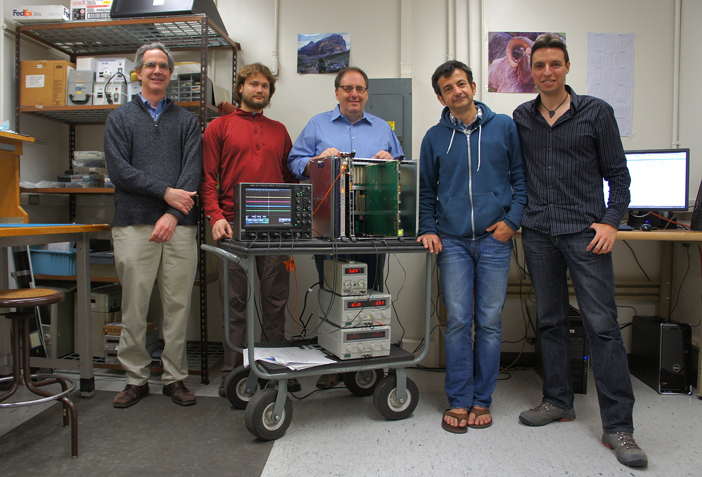
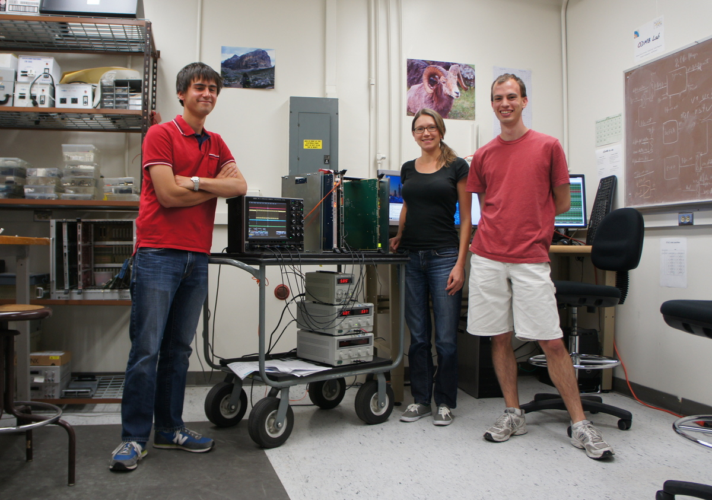
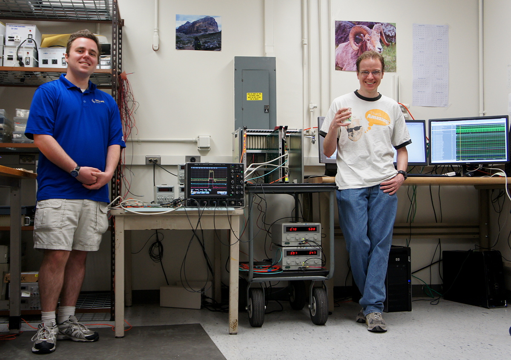
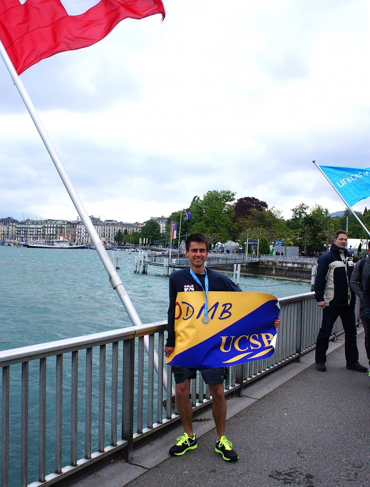
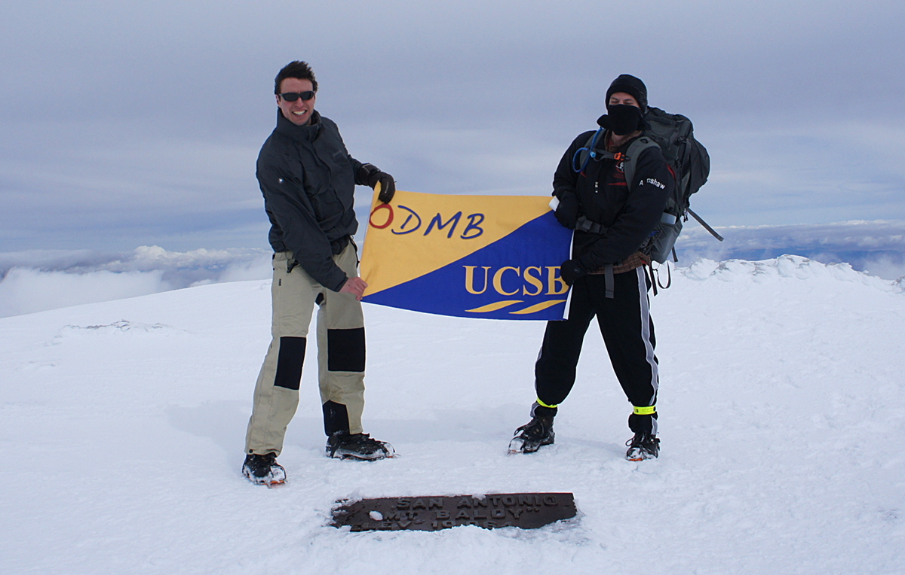
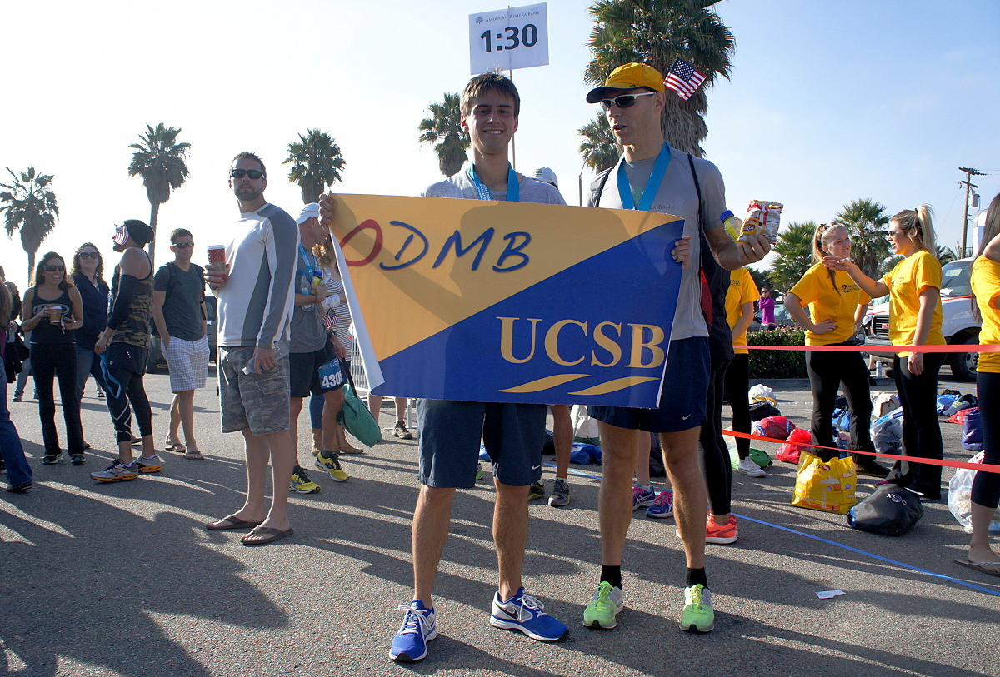
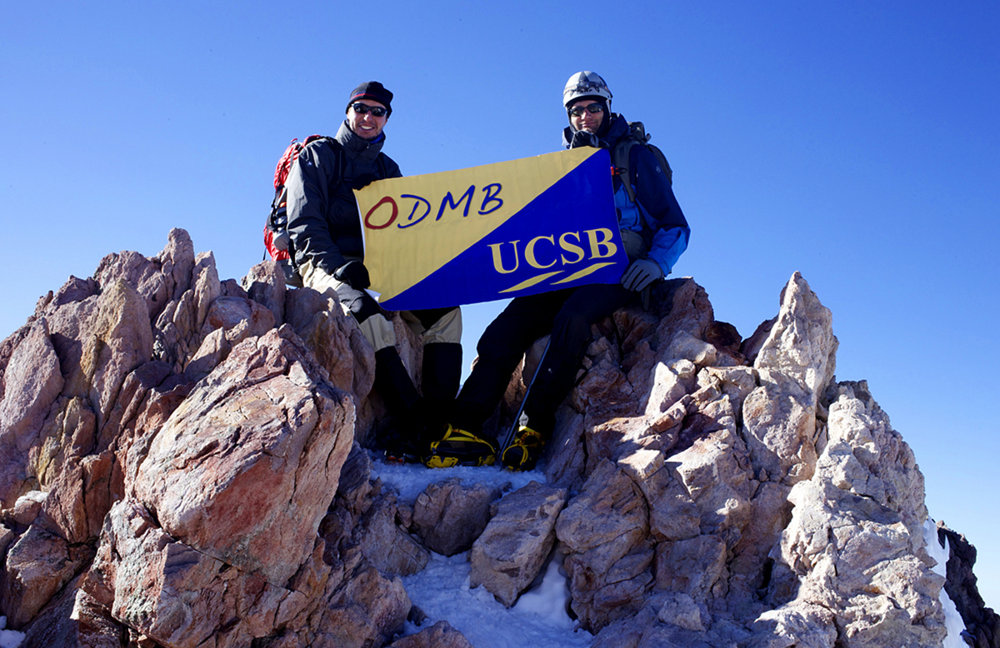

ODMB team



ODMB feats
4 June 2014: ODMB runs the windy Geneva half-marathon in 1:29:49

2 March 2014: ODMB at the top of Mount Baldy (10,068 feet) after a snow storm

8 November 2013: ODMB runs the Santa Barbara half-marathon in 1:30:13

2 June 2013: ODMB at the top of Mount Shasta (14,179 feet)
